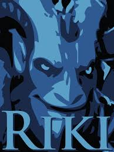

Riki, büyük Tahlin hanedanının ortanca çocuğu olarak dünyaya geldi. Tahta sahip çıkması için seçilen bir abisi ve şımartılıp üstüne düşülen bir kardeşi olan ortanca çocuk Riki, doğuştan görünmezlik sanatı için yaratılmış gibiydi. Kendisinin geliştirdiği ve bir gece ansızın kendi halkı tarafından ihanete uğrayıp ailesi katledildiğinde onun hayatını kurtaran sanat buydu. Tüm kraliyet hanedanı içinde bir tek o, sessizce, hızla ve dumanı kendine siper olarak kullanarak kaçabildi. Düşman savaşçılarını gafil avlayarak ve boğazlarını birer birer keserek hanedan topraklarını terketti. Artık hanedana karşı sorumluluklarından arınmış olan Riki, yeteneklerini yeni bir geleneğe hizmet için kullanıyor: Gizli Suikast. Düşmanlarını susturuyor, yeteneklerini geliştiriyor ve ailesini öldürenler ile vatandaşlık hakkını elinden alanlardan bir gün intikam almayı umuyor.
